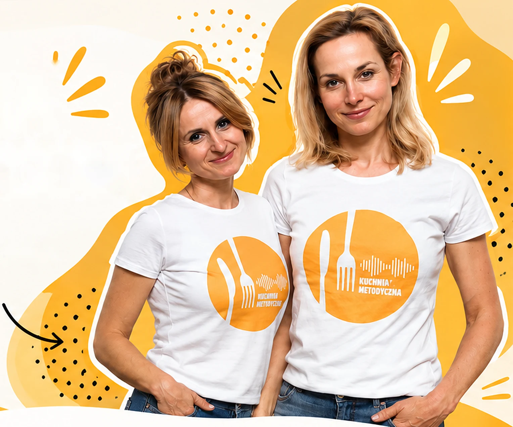

17
Makaron z truskawkami, czyli co oczywiste nie wszędzie jest oczywiste
Najnowszy odcinek
Jak odnaleźć się w klasie pełnej różnorodności kulturowej i reagować na odmienne standardy zachowania z wyrozumiałością.
Tu łączymy doświadczenie, wiedzę i praktykę, żeby tworzyć lepsze lekcje językowe.
SŁUCHAJ PODCASTU
Inspirujące rozmowy
o nauczaniu języków.
Dwie nauczycielki,
jedna wspólna pasja.
Praktyczna wiedza
dla nauczycieli.
Jak odnaleźć się w klasie pełnej różnorodności kulturowej i reagować na odmienne standardy zachowania z wyrozumiałością.
Bez PR-u i marketingu rozbrajamy kompetencje 4K i przenosimy je z teorii raportów prosto do sali lekcyjnej.
Czy Twoje prezentacje to lekka przystawka, czy ciężkostrawny bufet? Rozkładamy wystąpienia publiczne na składniki.
Dlaczego jedne rzeczy zostają z nami na długo, a inne znikają po kilku minutach? Co wspiera zapamiętywanie, a co je sabotuje?
Wyruszamy w podróż po języku i kulturze francuskiej. Przewodniczką jest Dominika Wierzbowicz.
Rozmawiamy o kreatywności w nauczaniu. Dlaczego bez niej lekcje tracą smak i jak obudzić ją w sobie i w uczniach?
Nigdy nie wiesz, na co trafisz, ale każda różnorodność ma swój sens.
Sztuczna inteligencja w edukacji: jak AI może wspierać nauczyciela w codziennej pracy?
Podróż po języku i kuchni włoskiej. Gościem jest Damian Rogala, wykładowca języka włoskiego.
Język pośrednik w nauczaniu języków obcych: kiedy pomaga, a kiedy przeszkadza?
Zaglądamy za kulisy pracy nad podręcznikiem: kto ma największy wpływ na jego kształt i na co trzeba zwrócić uwagę?
Kolejny odcinek cyklu „Języki na widelcu”: język niemiecki, bez uprzedzeń, z humorem.
Czy ocena to pomoc, czy presja? Rozmawiamy o ocenianiu.
Bierzemy na warsztat lekcję odwróconą: uczniowie uczą się samodzielnie przed zajęciami, a na lekcji działają.
Początek serii „Języki na widelcu”. Na pierwszy ogień idzie hiszpański.
Jaki związek ma praca domowa z kuchnią alzacką? Czy w ogóle ma sens i jaka powinna być?
Jak znaleźć balans pomiędzy nowoczesnym i tradycyjnym, efektywnym i efektownym na lekcji języka obcego?